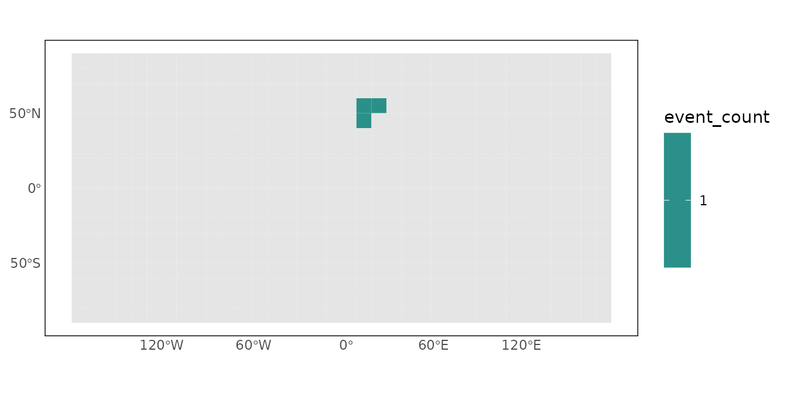
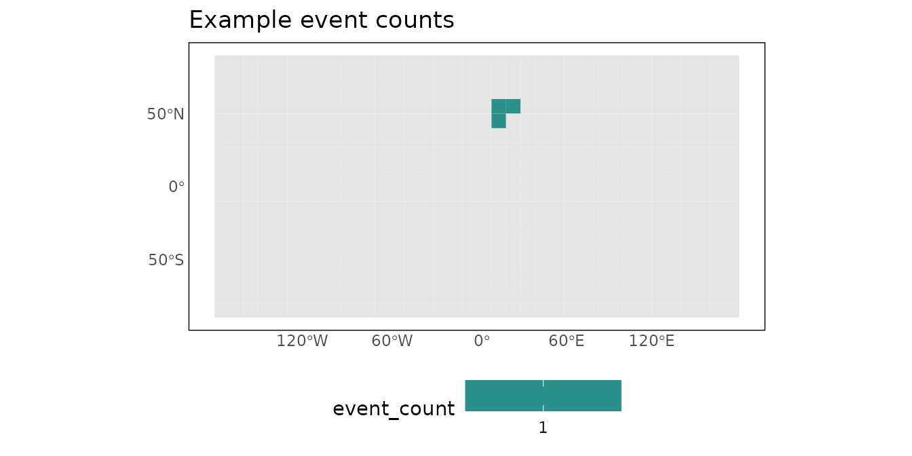

Results, output, and visualization
Source:vignettes/results-output-visualization.Rmd
results-output-visualization.RmdThe conversion functions can return ordinary data frames, rasters, or
a structured pg_result. The workflow helpers make it easier
to organize, inspect, save, and visualize those outputs
consistently.
Reproducible project paths
pg_paths() constructs conventional raw, processed, and
temporary data paths without changing the working directory.
project_root <- file.path(tempdir(), "priogridR-vignette-project")
paths <- pg_paths(project_root, create = TRUE)
paths
#> $root
#> [1] "/tmp/Rtmpm2meBH/priogridR-vignette-project"
#>
#> $raw
#> [1] "/tmp/Rtmpm2meBH/priogridR-vignette-project/data/raw"
#>
#> $processed
#> [1] "/tmp/Rtmpm2meBH/priogridR-vignette-project/data/processed"
#>
#> $temporary
#> [1] "/tmp/Rtmpm2meBH/priogridR-vignette-project/data/temp"The returned list can be passed directly to file.path()
when creating input or output filenames.
Structured conversion results
Request return = "result" when both the converted data
and its metadata are useful.
events <- data.frame(
longitude = c(10, 10.1, 20),
latitude = c(50, 50.1, 60)
)
config <- priogrid::pg_config(nrow = 18, ncol = 36, verbose = FALSE)
event_result <- pg_from_points(
events,
variable = "event_count",
longitude = "longitude",
latitude = "latitude",
aggregation = "count",
return = "result",
config = config
)
event_result
#> <pg_result>
#> Rows: 3
#> Raster layers: 1
#> Variable: event_countThe ordinary tabular representation is available through
as.data.frame().
event_data <- as.data.frame(event_result)
head(event_data)
#> pgid event_count
#> 1 488 1
#> 2 524 1
#> 3 525 1Write outputs
pg_write_result() selects the writer from the filename
extension. Data frames and tabular pg_result objects
support CSV, RDS, and—when arrow is installed—Parquet.
Rasters support TIFF and VRT.
csv_file <- file.path(paths$temporary, "event-counts.csv")
pg_write_result(event_result, csv_file, overwrite = TRUE)
utils::read.csv(csv_file)
#> pgid event_count
#> 1 488 1
#> 2 524 1
#> 3 525 1Use explicit overwrite permission in reproducible scripts when replacing an earlier output is intended.
pg_write_result(raster_result, "data/processed/variable.tif", overwrite = TRUE)Plot grid data
pg_plot() joins a variable to configured cell polygons
and returns an ordinary ggplot2 object.
map <- pg_plot(event_data, "event_count", config = config)
map
Add layers or replace theme components as with any other ggplot.
pg_theme() can also be used independently.

Temporary example files are removed when the R session ends. In a real project, use a persistent project root and keep raw and processed data in separate directories.